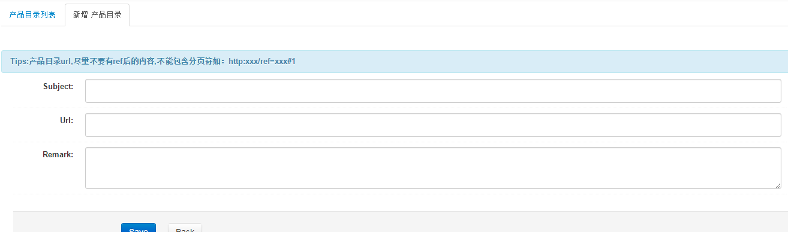
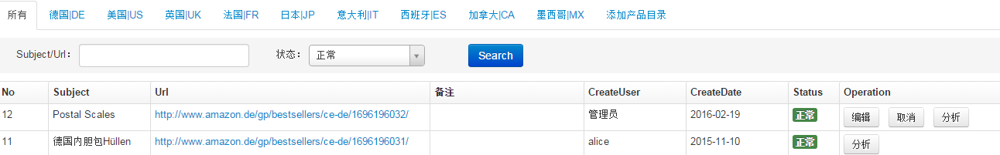

目录扫描
新增产品目录

- 录入目录Subject和URL,保存开始监控产品目录情况,相同目录只能录入一次
产品目录列表

- 查看添加的产品目录情况
- Operation列，点击编辑按钮，进入目录编辑界面，可以修改Subject、URL和Remark信息；点击取消按钮，取消目录扫描监控；
点击分析按钮，根据抓取这个目录的所有的评论数推测销量，如果目录有自己的产品，就根据自己产品的评论销量比推，如果没有，比例为100
- 预测近30天销量： 放入购物车数量是999，然后根据亚马逊提示，会告诉一个库存，如果库存大于999，就会显示999，这样的数据不要，要小于999的，然后根据连续几天的差值，算出30天的销量。
连续两天有库存,并且后一天比前一天大,然后取差额平均,最后乘上30。